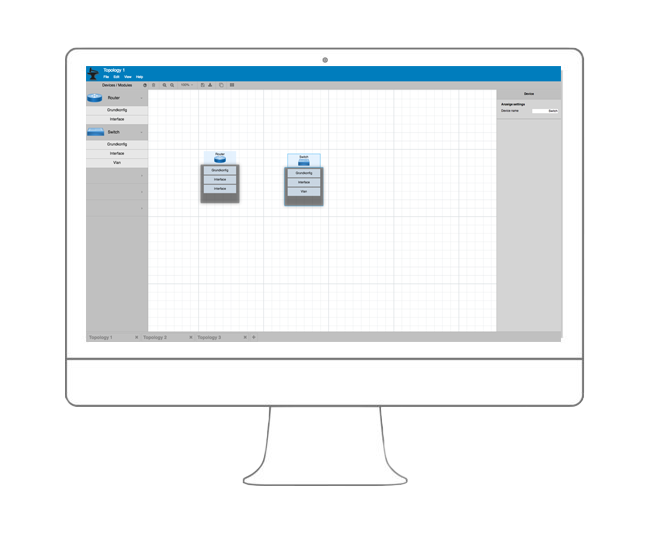
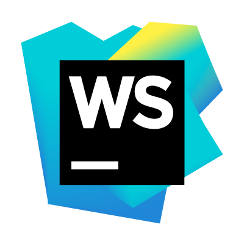
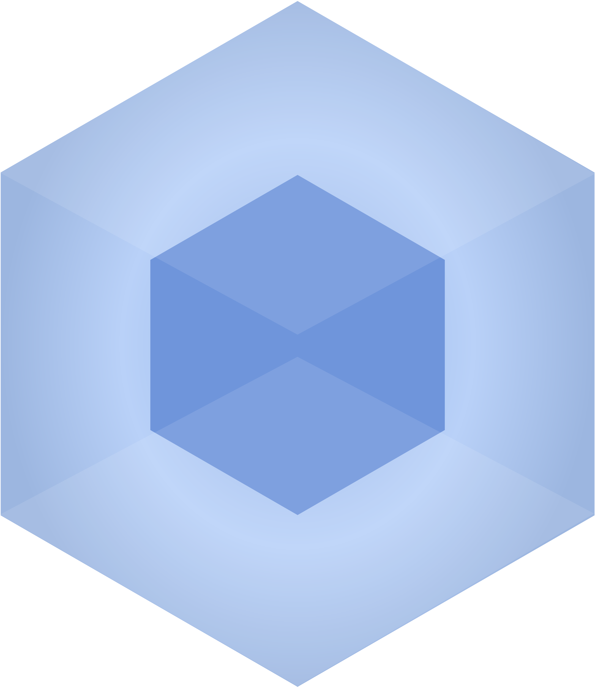

Cisco Configuration Forge
Design
Florian Schwingenschlögl
Programmierung
Simon Hodac
Programmierung
Robin Hödl
Projektleitung
Jonas Konrad
Selbst konfigurieren ist:
Mühsam
Fehleranfällig
Immer das Gleiche
Wir wollen:
Schnelle konfiguration
Einfache Bedienung
Flexibilität
Unsere Idee:
Webinterface für die Konfiguration von Netzwerkgeräten
Drag & Drop Funktion zur leichteren Konfiguration
Module
Einzelne Teilfunktion eines Gerätes
Grundkonfiguration
VLAN
Interfaces
Benutzer
Keine Anmeldung erforderlich
Einfacher Download der Konfigurations Datei
Breites Anwendersprektrum
Arbeitsfläche
Visuelle Repräsentation von Netzwerkgeräten
Übersichtlichere Konfiguration
Playground Feeling
Funktioniert sowohl am Desktop...

Als auch am Tablet...

ProjektManagement Tools
Microsoft Office
Teamspeak 
Telegram 
Toggle
Design Tools
Adobe XD 
Adobe Illustrator
Photoshop 
Draw.io
Programmierungsumgebungen
Sublime Text
Visual Studio Code 
Webstorm
Atom
Hinter den Kulissen
Git
Node JS 
Typescript 
AWS 



Projektmanagement
Abnahme von Dokumenten
Zeitmanagement
Abwesenheit von Mitgliedern
Technische Herausforderungen
Typescript
Kein Typescript Support für Paper.js
Plattformabhängige Komplikationen
Danke für Ihre Aufmerksamkeit!